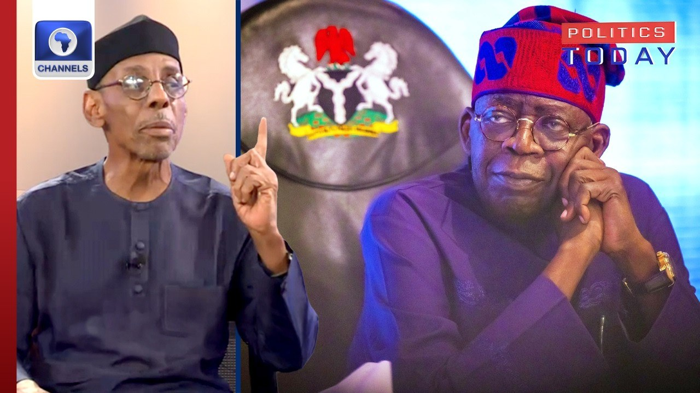

2027: Tinubu Will Lose If Election Is Free, Fair – Baba-Ahmed

Peoples Redemption Party National Chairman Hakeem Baba-Ahmed says President Bola Tinubu could lose the 2027 presidential election if it is conducted freely and fairly. In an interview on Channels Television’s Politics Today on Thursday, he described Tinubu as beatable and said he believed the president could lose in many states.
Baba-Ahmed argued that dissatisfaction with the administration could weaken Tinubu’s prospects for a second term. He dismissed concerns that opposition parties could not challenge the ruling All Progressives Congress, and said crowds at APC rallies did not necessarily show genuine support. He alleged that some people attending rallies were transported there and paid to take part.
He called on the Independent National Electoral Commission to provide a level playing field and said he hoped the judiciary would act fairly. Baba-Ahmed also raised concerns about electoral violence and whether security agencies could maintain order, warning that these conditions might restrict opposition parties’ ability to campaign. He criticised arrests of people for shouting “Bamayi,” arguing that such expressions should not be treated as offences.
Baba-Ahmed contrasted the coming contest with the 2023 election, saying Tinubu had received substantial support from the North because voters expected him to address serious problems. He claimed the Northwest had since turned away from the president. Tinubu won the 2023 election with 8,794,726 votes, ahead of Atiku Abubakar, who received 6,984,520, and Peter Obi, who received 6,101,533. Opposition candidates challenged the result, but the Presidential Election Petition Tribunal and Supreme Court upheld Tinubu’s victory. The 2027 presidential and National Assembly elections are scheduled for January 16, followed by governorship and State Houses of Assembly elections on February 6.
Source: Channels TV